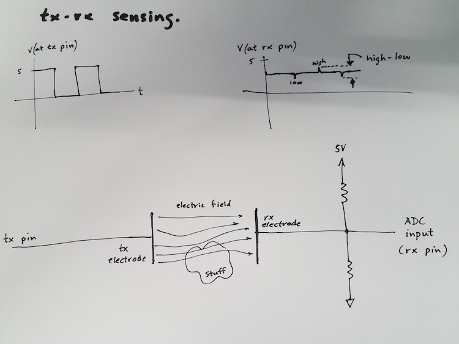
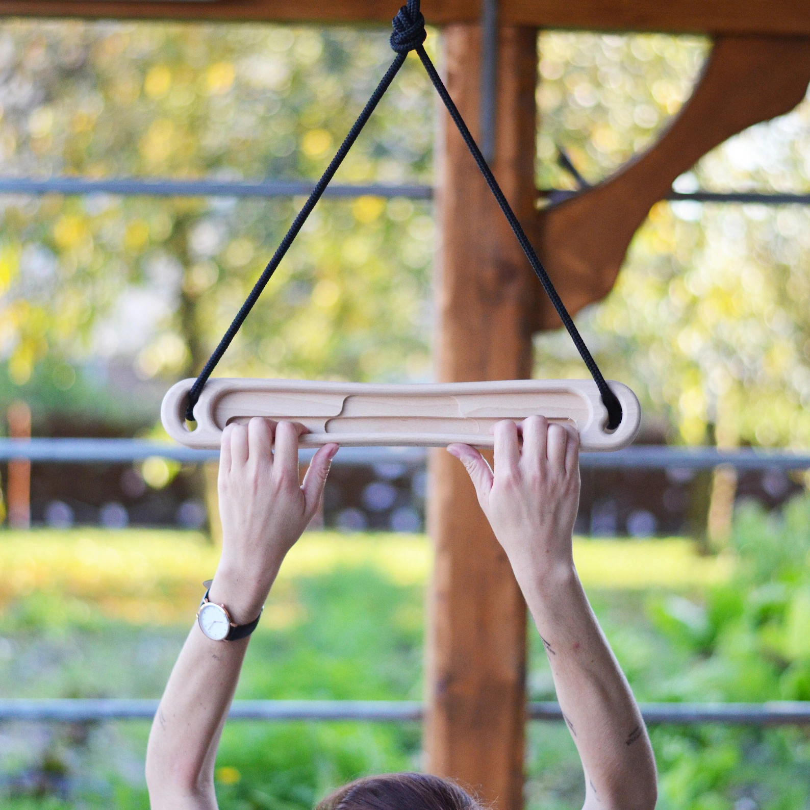

Week 6: Inputs

This week, we explored all types of sensors. I created and calibrated a capacitive sensor to measure weight and calibrated a ultrasonic sensor with two different methods to measure distance.
Creating a Capacitive Sensor
I created a parallel plate capacitor with some foam inbetween so that when compressed, distance between the plates decreases and capacitance increases. By using the handout tx-rx script, we can measure the change in capacitance and associate that number to some compression (and therefore, weight).

After creating my capacitor, I cut some wood boards and glued them on to increase the surface area. This provides a hard surface to ensure weight is evenly distributed which should lead to better measurements. Larger surface area also makes it easier to measure stuff.
New capacitor I made vs prototype capacitor I made after class.
I wired my capacitive sensor according to the tr-rx schematic on the PS70 website. I was able to connect the copper sheets of my capacitor to my breadboard using some alligator clips.
Tx-rx schematic on PS70 website.
Calibrating my Capacitive Sensor
I began calibration by measuring the weights of a bunch of different items. Most of these were scrap metal (since it was heavy and could fit on my sensor). I made sure to account for the weight of the plank on the scale.

I do my best with the noisy data and record some sensor reading associated with some real world weight.

I also put my sensor on the floor to measure this really heavy bucket
By plotting the raw sensor values and weights, I can calibrate my capacitive sensor using some graphing software like Desmos. With my x-axis representing the sensor value and the y address representing the object's weight, I could create a line of best fit to calcuate an estimation of weight given some value from the sensor. My line of best fit isn't perfect, but theres defintely a positive correlation. I use the equation representing my line of best fit to calculate approximate weights given sensor values.
The estimated weight is then displayed on a small Oled screen! It's not super accurate, but it's cool that it works.
Code
#include
#include
#include
int force_sensor_analog_pin = 12;
int force_sensor_tx_pin = 14;
#define OLED_WIDTH 128
#define OLED_HEIGHT 64
#define OLED_ADDR 0x3C
class Txrx_capacitive_sensor {
private: // This wasn't specifically covered in class, but it's good notation
int analog_pin;
int tx_pin;
int current_time = millis();
int previous_time = 0;
int read_high;
int read_low;
int diff;
long int sum;
int n_samples;
public:
int result = 0;
int previous_result;
Txrx_capacitive_sensor(int analog_pin, int tx_pin, int n_samples = 100) {
this->analog_pin = analog_pin;
this->tx_pin = tx_pin;
this-> n_samples = n_samples;
}
void init() {
pinMode(tx_pin, OUTPUT);
}
long update_tx_rx() {
sum = 0;
for (int i = 0; i < n_samples; i++) {
digitalWrite(tx_pin,HIGH); // Step the voltage high on conductor 1.
read_high = analogRead(analog_pin); // Measure response of conductor 2.
delayMicroseconds(100); // Delay to reach steady state.
digitalWrite(tx_pin,LOW); // Step the voltage to zero on conductor 1.
read_low = analogRead(analog_pin); // Measure response of conductor 2.
diff = read_high - read_low; // desired answer is the difference between high and low.
sum += diff; // Sums up N_samples of these measurements.
}
previous_result = result;
result = sum;
return sum;
}
float calculate_weight() {
float c1 = -20515.8938;
float c2 = 1.83446;
float c3 = -0.0000630518;
float c4 = 8.52065e-10;
return c1 + c2 * result + c3 * pow(result, 2) + c4 * pow(result, 3);
}
};
Txrx_capacitive_sensor force_sensor = Txrx_capacitive_sensor(force_sensor_analog_pin, force_sensor_tx_pin);
Adafruit_SSD1306 display(OLED_WIDTH, OLED_HEIGHT);
void setup() {
Serial.begin(9600);
display.begin(SSD1306_SWITCHCAPVCC, OLED_ADDR);
display.clearDisplay();
force_sensor.init();
}
int x = 0;
int current_kb_time = millis();
int previous_kb_time = 0;
int kb_interval = 400;
void loop() {
int sensor_value = force_sensor.update_tx_rx();
int previous_sensor_value = force_sensor.previous_result;
float weight = force_sensor.calculate_weight();
Serial.println(sensor_value);
// display.clearDisplay();
display.setTextSize(2);
display.setTextColor(WHITE);
display.setCursor(x % OLED_WIDTH, (x / OLED_WIDTH) * 16);
// display.println("Approx ");
// display.println("Grams: ");
// display.println((int) weight);
current_kb_time = millis();
if (sensor_value - previous_sensor_value > 1000 && current_kb_time - previous_kb_time > kb_interval) {
display.print("A");
x += 16;
previous_kb_time = current_kb_time;
}
display.display();
}
Side note: One-key keyboard
I converted the chunky capacitive pressure sensor I made into a one-key keyboard. It only required a minor change to the loop() portion of the code.
int x = 0;
int current_kb_time = millis();
int previous_kb_time = 0;
int kb_interval = 400;
void loop() {
int sensor_value = force_sensor.update_tx_rx();
int previous_sensor_value = force_sensor.previous_result;
float weight = force_sensor.calculate_weight();
Serial.println(sensor_value);
// display.clearDisplay();
display.setTextSize(2);
display.setTextColor(WHITE);
display.setCursor(x % OLED_WIDTH, (x / OLED_WIDTH) * 16);
// display.println("Approx ");
// display.println("Grams: ");
// display.println((int) weight);
current_kb_time = millis();
if (sensor_value - previous_sensor_value > 1000 && current_kb_time -
previous_kb_time > kb_interval) {
display.print("A");
x += 16;
previous_kb_time = current_kb_time;
}
display.display();
}
Wiring Up an Ultrasound Sensor
An ultrasound sensor is pretty easy to work with. All that's necessary is 5V (yes, 5V are needed or else it won't work—Ask me how I know), ground, a pin for echo, and finally a pin for trigger. An ultrasonic sensor basically works by sending a high-frequency sound (which we can't hear) and then measuring how long it takes for that sound to bounce back. The trigger pin tells the ultrasound module when to emit this sound and the echo pin listens for the "echo" or bounce back. Pretty neat.

This is basically how I wired my ultrasonic module, just the trigger and echo pins are different
Using this guide I was able to get my ultrasonic sensor working with code utilizing class structure. Essentially, the trigger pin tells the ultrasonic module to wait 2 microseconds and then send out a high frequency sound for 10 microseconds. Then the echo pin tells the ultrasound module to listen for a sound, with a set timeout of around 30 milliseconds (which somehow translates to about 10 inches of max distance measurable even though light should be able to travel 5 meters in this time). However, with the way that the listening function pulseIn() works, it blocks the rest of the program from running, kind of like what delay() does. It's annoying and I couldn't find a workaround, but the we can still record data at a pretty rapid rate.
So, with ultrasonic pulses being set out and echos being listened for, we can record the time it takes for the sound to bounce back. We can then convert this into distance in two ways.
- Calculating with the speed of sound (duration * speed of sound / 2 = distance)
- Using calibration to associate duration with dsitance
I thought it would be cool to compare these two methods. Of course, that meant I had to calibrate my ultrasonic sensor in a similar manner to how I calibrated my capacitive sensor. I recorded the durations of several different distances and then created a line of best fit to find the mathematical relationship between duration and distance.


Being very precise
With my sensor calibrated, I could see compare both the distance calculated from the speed of sound and the distance calculated from my calibration.
Pretty close!
Code
#include
#include
#include
#define OLED_WIDTH 128
#define OLED_HEIGHT 64
#define OLED_ADDR 0x3C
class Ultrasonic_sensor {
private:
int trig_pin;
int echo_pin;
int current_time = micros();
int last_cycle_time = 0;
long pulse_state = 0;
int pulse_start = 0;
public:
int duration;
Ultrasonic_sensor(int trig_pin, int echo_pin) {
this->trig_pin = trig_pin;
this->echo_pin = echo_pin;
}
void init() {
pinMode(trig_pin, OUTPUT);
pinMode(echo_pin, INPUT);
}
int update() {
current_time = micros();
if (pulse_state == 0) {
digitalWrite(trig_pin, LOW);
pulse_start = current_time;
pulse_state = 1;
}
else if (pulse_state == 1 && current_time - pulse_start >= 2) {
digitalWrite(trig_pin, HIGH);
pulse_start = current_time;
pulse_state = 2;
}
else if (pulse_state == 2 && current_time - pulse_start >= 10) {
digitalWrite(trig_pin, LOW);
pulse_state = 0;
}
int new_duration = pulseIn(echo_pin, HIGH, 30000);
if (new_duration > 0) { // Workaround for pulseIn blocking
duration = new_duration;
}
return duration;
}
float calculate_distance_SOS() {
return duration * 0.01337 / 2;
}
float calculate_distance_calibrated() {
float c1 = 0.275562;
float c2 = 0.00531372;
float c3 = 0.0000021268;
float c4 = -8.55747e-10;
return c1 + c2 * duration + c3 * pow(duration, 2) + c4 * pow(duration, 3);
}
};
int my_sensor_trig_pin = 19;
int my_sensor_echo_pin = 18;
Ultrasonic_sensor my_sensor = Ultrasonic_sensor(my_sensor_trig_pin, my_sensor_echo_pin);
Adafruit_SSD1306 display(OLED_WIDTH, OLED_HEIGHT);
void setup() {
Serial.begin(115200);
if(!display.begin(SSD1306_SWITCHCAPVCC, OLED_ADDR)) {
Serial.println("SSD1306 allocation failed");
while(true); // stop here, otherwise display won’t work
}
display.clearDisplay();
my_sensor.init();
}
void loop() {
my_sensor.update();
Serial.println(my_sensor.duration);
float distance_from_formula = my_sensor.calculate_distance_SOS();
float distance_from_calibration = my_sensor.calculate_distance_calibrated();
display.clearDisplay();
display.setTextSize(2);
display.setTextColor(WHITE);
display.setCursor(0,0);
display.println("Sound:");
display.print(distance_from_formula);
display.println(" in");
display.println("Calib:");
display.print(distance_from_calibration);
display.println(" in");
display.display();
}
Reflection
Sensors are pretty cool, and even though I probably won't use them in my final project, I liked this assignment. It was definetly a bit more work compared to some of the other weeks, but it made me feel like a real electronics hobbiest.
Also, I will try to manufacture a climbing hangboard for CNC week. For some reason they're upwards of a hundred dollars even though they seem pretty easy to make.
Here's my recreation of a portable hangboard in Onshape.
I WILL have crazy grip strength